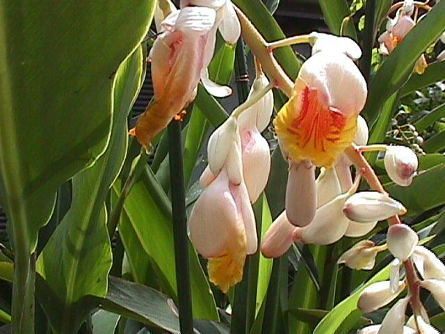
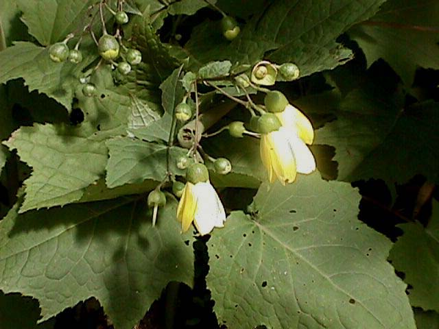
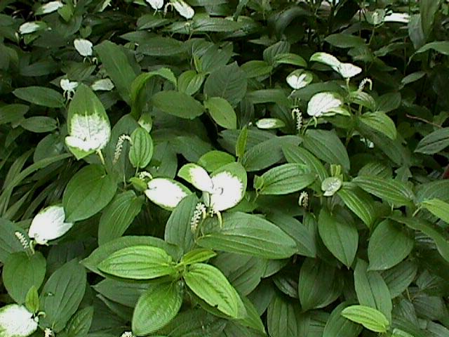
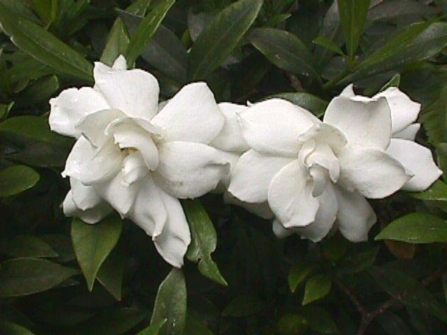

|  |
| 月桃 今年は7つも咲きました。 房の上の方から咲き始め、先端の方に向かって咲いて行きます。 先端部が咲く頃は初めに咲いた部分はしぼんでしまっているかと思いきや再び花が開くと云う不思議な花です。 沖縄の平和公園で拾って来た種から育ちました。 我が家の平和のシンボルです。 |
|  |
| きれんけしょうま 四国の剣岳のきれんげしょうまが有名です。 この苗はMHNが近くの園芸店で見つけて購入したものですが、手に入れた時は植物図鑑にも載っていなかったのでそれほど珍しい種だとは知りませんでした。 どんな場所を好むかも判らず、植え替えをして現在の場所に定着しましたが花が完全に開いたのは今年が初めてです。 |
|  |
| 半夏生 24節気の半夏生の頃、先端部の葉の手前半分ほどが白く変わります。 これとは別に花は白い穂状につきますが葉に比べて地味なものです。 茶花として珍重されます。 |
|  |
| くちなし(矮小種) 八重咲きのくちなしです。 高さは30cm程にしかならない矮小種です。きんかんの木の下木になっています。 小さいですが自己主張は大きいです。 |